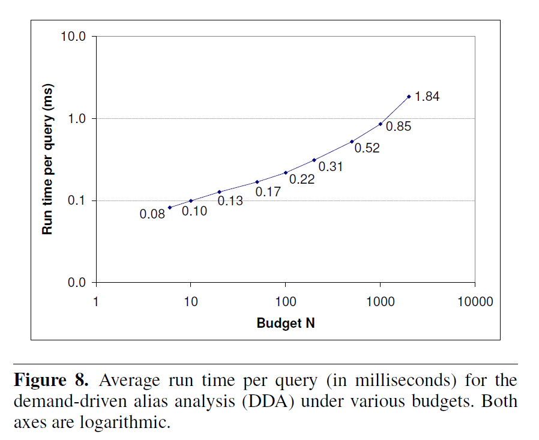
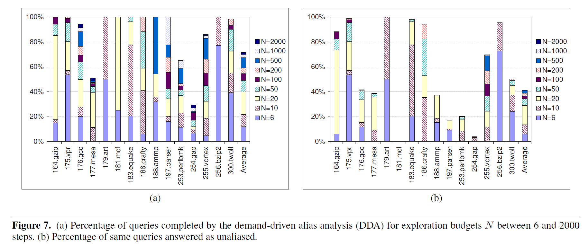
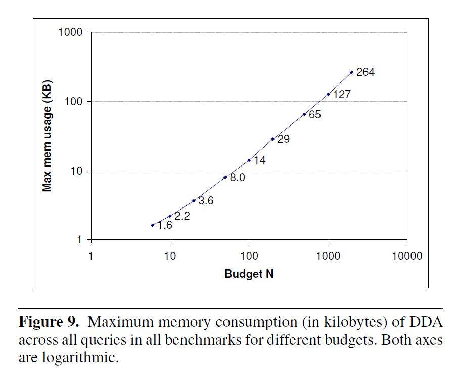
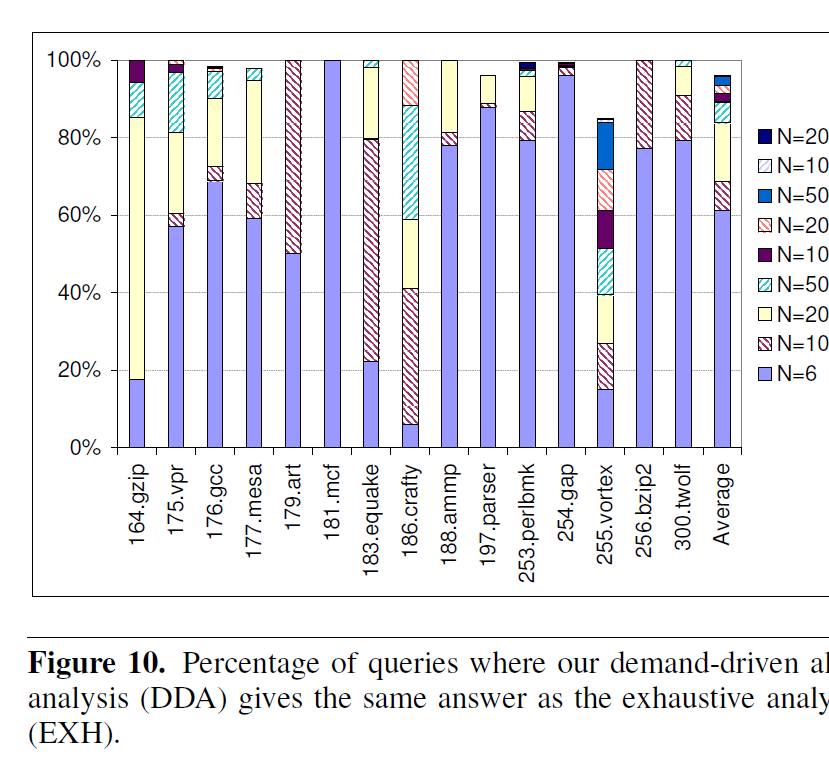

問 : ある 2 つのポインタ p, q
が同じ場所を指しうるか？
Program : [*x] [ z] [*s] [ t]
^ ^ ^ ^
s = &t; | | | |
r = &z; [ x]<------[*y]<------[&z]------>[ r]------>[ s]<------[&t]
y = &r; ^ ^ ^ ^
s = r; | | | |
x = *y; [&x] [ y]<-----------------[&r] [&s]
^
|
[&y]
全ての辺には対応する逆向きの辺も貼られているが、表記上は省略
縦線 : 参照外し (*), 逆辺は参照 (&)
横線 : 代入 (→), 逆辺は被代入 (←)
(カッコ内は辺のラベル)z から *x までのあるパス :
& → → *
[ z]------>[&z]------>[*y]------>[ x]------>[*x]ラベル列 & → → * は、次の操作に対応 :
これは z と *x が may-alias
関係にあるということ。
直感的な観察 :
& と *
のバランスが取れていれば良い。仮定 : 変数はすべてポインタである。
int a; は
int *ptr_a = stack_alloc(sizeof(int)) に変えれば良い。形式的定義 :
| 種別 | Andersen の定式化 | 提案手法の定式化 |
|---|---|---|
| Address of | x = &y |
*ptr_x = ptr_y |
| Assign | x = y |
*ptr_x = *ptr_y |
| Load | x = *y |
*ptr_x = **ptr_y |
| Store | *x = y |
**ptr_x = *ptr_y |
Program Expression Graph (PEG)
a, b が CFL-reachable :a, b 間のパスのラベル列が L の要素である
e1 と e2 が
&(*e1) == &(*e2) である
e1 と e2 が e1 == e2 である
\begin{align} M &::= `\&`\ V\ `*`\\ V &::= \bar{F}\ M?\ \bar{F} \\ F &::= (→\ M?)^{*} \\ \bar{F} &::= (M?\ ←)^{*} \\ \end{align}
→ M
[*a]----->[*b]- ... ->[*c]*b と
*c は同じメモリ位置を指す*c = *a を表す M ←
[*c]----->[*b]- ... ->[*a]*c = *a を表す & V *
[ a]------->[&a]--- ... --->[ y]------->[*y]&a == y&a == &(*y) を表す _
F M F
[*a]------->[*b]--- ... --->[*c]------->[*d]*b = *a&(*b) == &(*c) →
*b == *c*d = *c*a == *d(命令順は考えていないことに注意)
\begin{align} M &::= `\&`\ V\ `*`\\ V &::= \bar{F}\ M?\ \bar{F} \\ F &::= (→\ M?)^{*} \\ \bar{F} &::= (M?\ ←)^{*} \\ \end{align}
整理して、
\begin{align} M &::= `\&`\ V\ `*`\\ V &::= (M?\ ←)^{*}\ M?\ (→\ M?)^{*} \\ \end{align}
\begin{align} M &::= `\&`\ V\ `*`\\ V &::= (M?\ ←)^{*}\ M?\ (→\ M?)^{*} \\ \end{align}
e1, e2# aassign_to(a) : {b : <a> → <b>}
# assign_from(a) : {b : <a> ← <b>}
# alias_mem[n] : n の memory alias
alias_mem: dict[Expr, list[Expr]] = {}
# {(s, c)} = reach[n] : <s> から始めて <n> に状態 c で到達した
reach: dict[Expr, list[(Expr, State)]]
def may_alias(<e1>: Expr, <e2>: Expr):
# ワークリスト
# (<n>, <s>, c) = w.pop()
#
# 意味 :
# <s> --- V ---> <n>
# 状態S1
#
w: list[(Expr, Expr, State)] = [(<&e1>, <&e1>, S1)]
while w.len() != 0:
(<n>, <s>, c) = w.pop()
# 終了条件
if <*s> == e1 and <*n> == e2:
return True
# 情報を上方 (参照外し側) へ伝播
if <*n> != NULL and <*n> not in alias_mem[<*s>]:
# M(<*s>, <*n>) を新たに発見した
alias_mem[<*s>].insert(<*n>)
for (<t>, c) in reach(<*s>):
if c == S1:
# <t> ----> <*s> --- M ---> <*n>
# S1 S2
#
# → reach[<*n>].insert((<t>, S2))
# w.insert((<*n>, <t>, S2))
#
propagete(w, <*n>, <t>, S2)
elif c == S3:
propagate(w, <*n>, <t>, S4)
# 情報流を考慮して到達可能性を伝播
if c == S1:
for <m> in assign_from(<n>):
propagate(w, <m>, <s>, S1)
for <m> in alias_mem[<n>]:
propagate(w, <m>, <s>, S2)
for <m> in assign_to(<n>):
propagate(w, <m>, <s>, S3)
elif c == S2:
for <m> in assign_from(<n>):
propagate(w, <m>, <s>, S1)
for <m> in assign_to(n):
propagate(w, <m>, <s>, S3)
elif c == S3:
for <m> in assign_to(<n>):
propagate(w, <m>, <s>, S3)
for <m> in alias_mem[n]:
propagate(w, <m>, <s>, S4)
elif c == S4:
for <m> in assign_to(<n>):
propagate(w, <m>, <s>, S3)
# 情報を下方へ伝播
if <&n> != NULL and (c == S1 or c == S3):
propagate(w, <&n>, <&n>, S1)
return falsedef propagate(w, <n>, <s>, c):
if (<s>, c) not in reach(<n>):
reach(<n>).insert((<s>, c))
w.insert((<n>, <s>, c))may_alias(<e1>, <e2>) と
may_alias(<e2>, <e1>) を並列実行問 : あるポインタ p の指し先は何か？
\begin{align} R &= \{ (a, a) | a \in \text{Addr} \}\\ P &= \bar{F}R = (M?\ ←)^{*} R \subseteq \text{Expr} \times _text{Addr}\\ \end{align}
P を調べれば良い。
本筋でないのでアルゴリズムは省略とのこと。
形式的に証明を与えた (略)
実装
検体
| Program | Code size (KLOC) | PEG #Node | PEG #Edge | Picked queries |
|---|---|---|---|---|
| 164.gzip | 7.8 | 4767 | 3226 | 34 |
| 175.vpr | 17.0 | 11242 | 9833 | 91 |
| 176.gcc | 205.7 | 112341 | 168484 | 1086 |
| 177.mesa | 50.2 | 51766 | 271863 | 955 |
| 179.art | 1.3 | 1226 | 659 | 4 |
| 181.mcf | 1.9 | 1303 | 1040 | 4 |
| 183.equake | 1.5 | 1716 | 967 | 54 |
| 186.crafty | 19.5 | 10929 | 7238 | 17 |
| 188.ammp | 13.3 | 13526 | 9203 | 59 |
| 197.parser | 10.9 | 9538 | 8753 | 99 |
| 253.perlbmk | 61.8 | 48703 | 52964 | 304 |
| 254.gap | 59.5 | 58915 | 809665 | 656 |
| 255.vortex | 52.6 | 50322 | 65125 | 784 |
| 256.bzip2 | 4.6 | 3523 | 1681 | 22 |
| 300.twolf | 19.7 | 14057 | 9977 | 120 |
環境
15 検体の合計 8 秒
X-sensitivity
a->f も a
と同じノード扱い)
その他
クエリの選定 :
評価するアルゴリズム :
N は 6 ~ 2000 step per query




| Budget | 解析完了の割合 (DDA/DDPT) | EXH との一致度 (DDA/DDPT) | 実行時間 [ms] (DDA/DDPT) |
|---|---|---|---|
| 6 | 12% / 8% | 61% / 63% | 0.08 / 0.08 |
| 10 | 22% / 15% | 69% / 69% | 0.10 / 0.09 |
| 20 | 40% / 19% | 84% / 73% | 0.13 / 0.11 |
| 50 | 49% / 27% | 89% / 80% | 0.17 / 0.18 |
| 100 | 55% / 29% | 91% / 82% | 0.22 / 0.23 |
| 200 | 59% / 30% | 93% / 83% | 0.31 / 0.36 |
| 500 | 67% / 31% | 96% / 84% | 0.52 / 0.75 |
| 1000 | 70% / 31% | 96% / 84% | 0.85 / 1.63 |
| 2000 | 72% / 31% | 96% / 84% | 1.84 / 6.32 |
第一に、古い研究なので直接の対決相手として不足。
ただ、 CFL-reachability ベースのポインタ解析を知るには有用。
’19 MLTA
は points-to 解析の流派としてポインタ解析と型解析を挙げていた。
しかし、 dfa ベースと cfl-reachability
ベースでは全く違うので、再分類も要検討。
foo の call/ret のエッジにラベル \{*{\text{foo}}, \}*{\text{foo}} を貼る